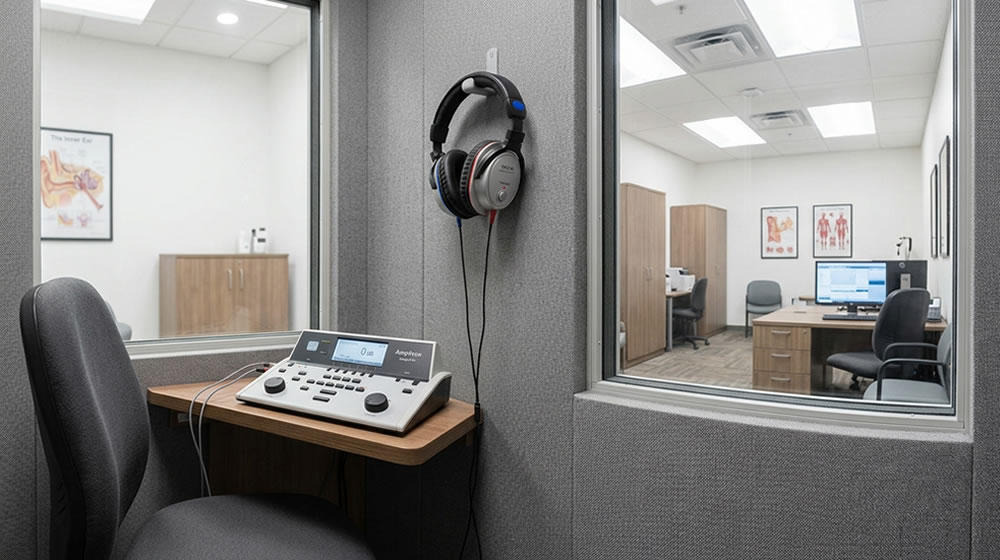
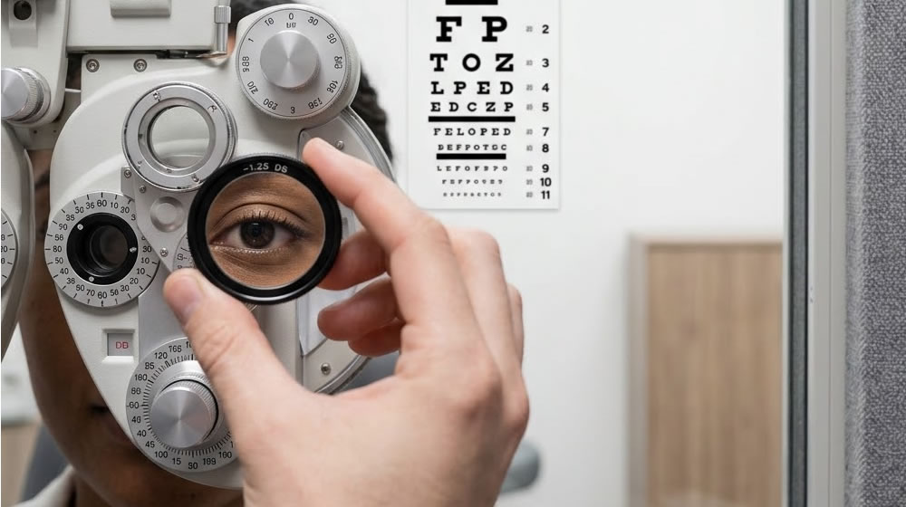
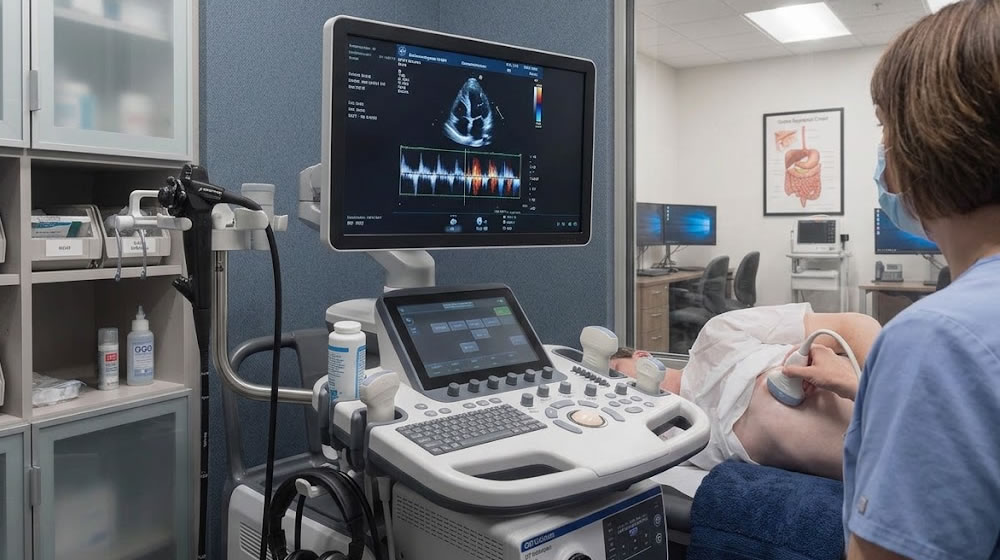
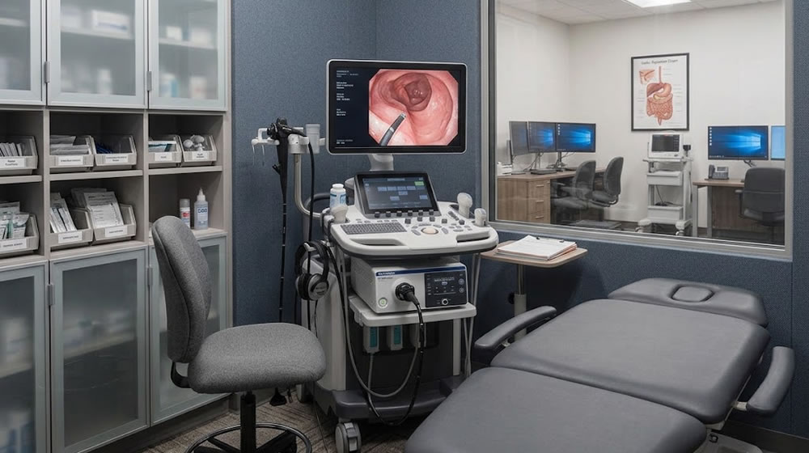
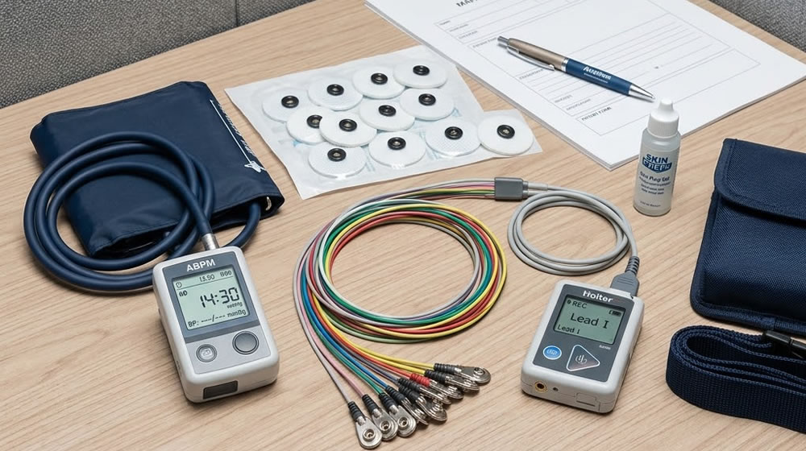
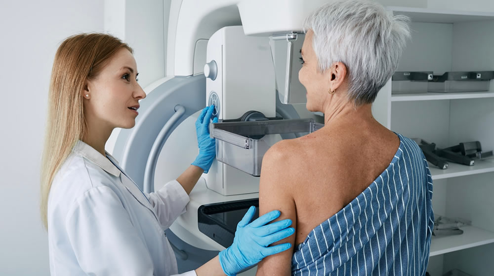
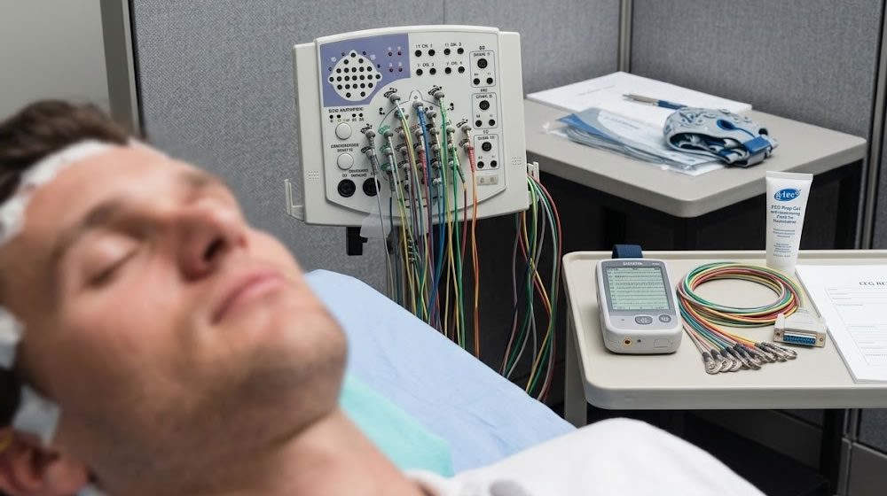
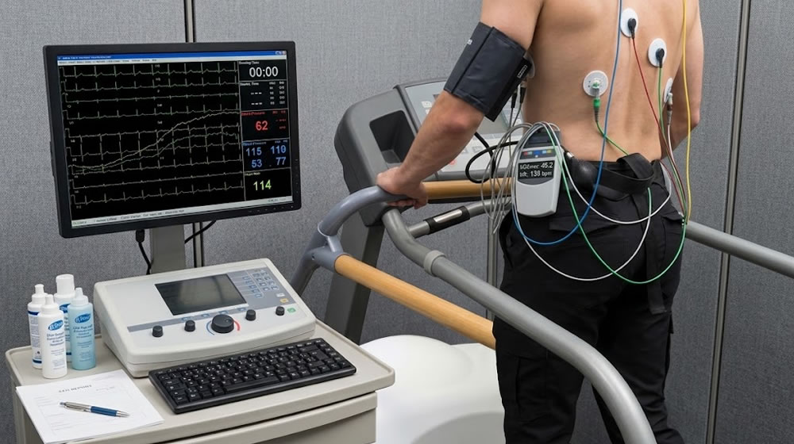
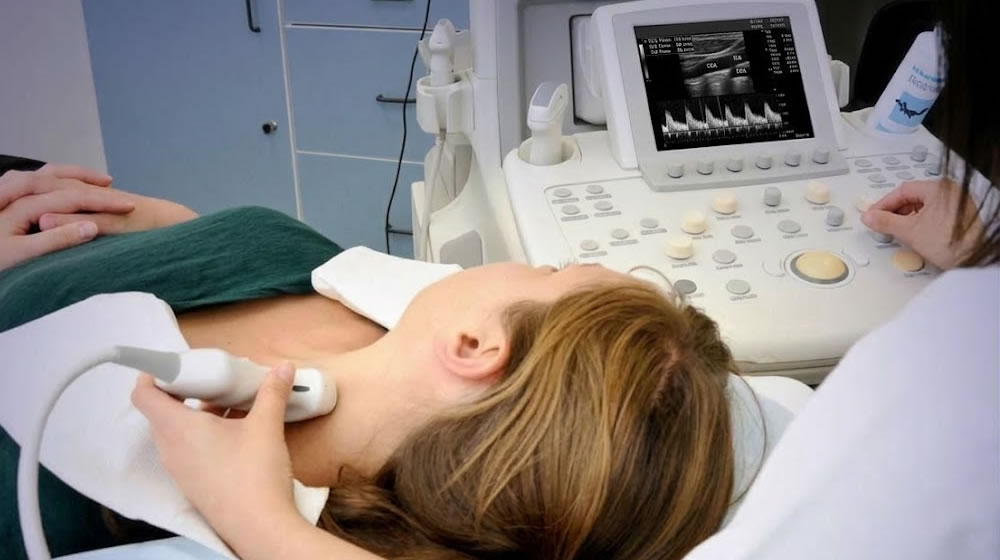
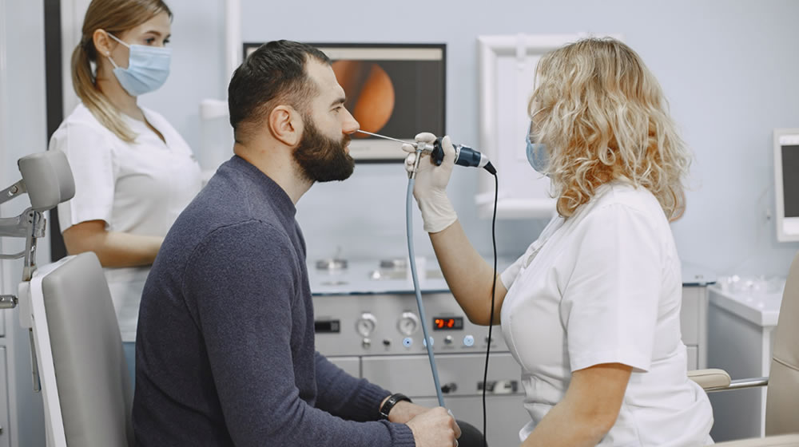

Nossos Exames
Na Secure, você encontra exames que auxiliam na prevenção, no diagnóstico e no acompanhamento da sua saúde. Nossa estrutura reúne diferentes procedimentos em um só lugar. Agende o seu exame!

Audiometria
A audiometria avalia a capacidade auditiva do paciente. Realizada por um fonoaudiólogo, consiste em testes feitos em uma cabine acústica, com o resultado apresentado em um audiograma.

Acuidade Visual
A acuidade visual avalia a clareza da visão e a capacidade de enxergar detalhes com nitidez.

Ecocardiograma
O ecocardiograma é um ultrassom do coração que utiliza ondas sonoras para gerar imagens e avaliar sua estrutura e funcionamento, ajudando a identificar possíveis alterações cardíacas.
Eletrocardiograma (ECG)
O eletrocardiograma é um exame que registra a atividade elétrica do coração, ajudando a diagnosticar problemas cardíacos.

Endoscopia Digestiva Alta (EDA)
A endoscopia digestiva alta utiliza um endoscópio para visualizar o trato digestivo, permitindo identificar alterações e auxiliar no diagnóstico e tratamento de doenças.

Mapa cardiológico de pressão arterial / Holter
A MAPA monitora a pressão arterial durante 24 horas, realizando medições automáticas a cada 15 ou 20 minutos e registrando os resultados.

Mamografia
A mamografia é um exame de imagem que utiliza raios-X para detectar alterações nas mamas, sendo fundamental na prevenção e diagnóstico precoce do câncer de mama.

Mapeamento cerebral / Eletroencefalograma (EEG)
O eletroencefalograma (EEG) registra a atividade elétrica do cérebro por meio de eletrodos colocados no couro cabeludo, de forma não invasiva.

Teste Ergométrico
O teste ergométrico avalia o funcionamento do coração durante esforço físico, com acompanhamento por eletrocardiograma e monitoramento dos batimentos cardíacos.
Raio-X
O exame de raio-X utiliza radiação para gerar imagens do interior do corpo, permitindo a avaliação de ossos, órgãos e tecidos.

Ultrassonografia geral e vascular com doppler
A ultrassonografia utiliza ondas de alta frequência para gerar imagens das estruturas internas do corpo. Com o Doppler, também permite avaliar o fluxo sanguíneo nos vasos.

Videolaringologia
A videolaringologia é um exame que utiliza uma câmera para visualizar a laringe e as cordas vocais, permitindo avaliar a função vocal e identificar possíveis alterações.
Nenhum exame encontrado para “”.
Confira a grafia ou tente outro termo. Se preferir, fale conosco pelo WhatsApp.
Há mais de 12 anos
construindo relações de confiança!
Dúvidas comuns
Preciso agendar horário para atendimento?
Sim. Trabalhamos com atendimento previamente agendado para garantir maior dedicação a cada cliente.
O atendimento pode ser online?
Sim. Realizamos atendimentos presenciais e virtuais.
Como funciona a primeira consulta?
A consulta é destinada à análise inicial da situação e orientação médica adequada.
Atendem empresas?
Sim. Prestamos assessoria médica para empresas de diversos segmentos.